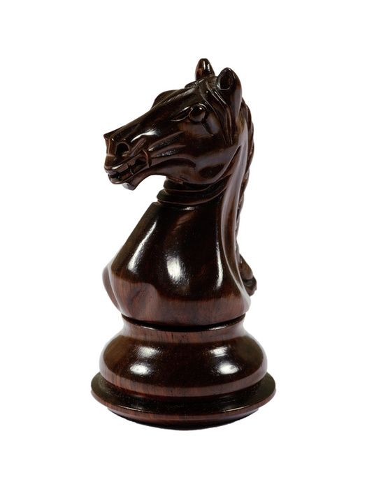

Конь
Конь двигается на две клетки по вертикали и затем на одну клетку по горизонтали или, наоборот, на две клетки по горизонтали и на одну клетку по вертикали.Конь двигается на две клетки по вертикали и затем на одну клетку по горизонтали или, наоборот, на две клетки по горизонтали и на одну клетку по вертикали. Движение напоминает заглавную букву «Г» кириллического или заглавную букву «L» латинского алфавитов.
Конь меняет цвет поля при каждом ходе: с белой клетки прыгает на чёрную и наоборот.
От шаха конём невозможно закрыться, при этом король противника не может его взять.
Конь — единственная фигура, способная самостоятельно нападать на любую фигуру противника (кроме коня), оставаясь при этом в безопасности.
